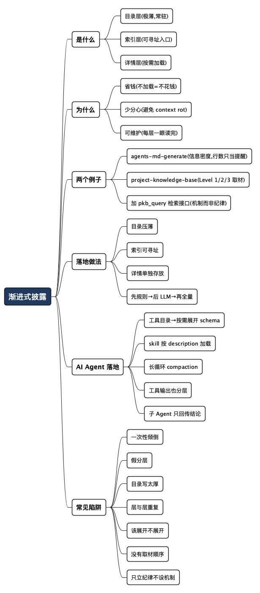

上下文管理之渐进式披露：别把整座图书馆搬进模型的脑子
Posted on 二 25 8月 2026 in AI
| Abstract | 上下文管理之渐进式披露 |
|---|---|
| Authors | Walter Fan |
| Category | AI |
| Status | v1.0 |
| Updated | 2026-08-25 |
| License | CC-BY-NC-ND 4.0 |
短大纲
展开看看
- 核心观点：渐进式披露是省 token 的关键手段——先给模型一张目录，让它按需取详情，而不是开局就把所有资料倒进去。
- 一句话定义：把上下文分层，默认只加载"够用的最少信息"，需要时再逐层展开。
- 为什么有效：省钱、少分心、可维护，三样一起来。
- 两个真实例子：我写的
agents-md-generate和project-knowledge-base两个 skill，都是靠分层活下来的。 - 落地做法：目录层 → 索引层 → 详情层，配一个"先规则、后 LLM"的取材顺序。
- 落到 AI Agent：工具目录按需展开、skill 按 description 加载、长循环做 compaction、子 Agent 只回传结论。
- 常见陷阱：一次性倾倒、假分层、目录写太厚、层与层重复、该展开时不展开、把分层当纪律而不是运行时机制；Agent 侧还有每轮重喂历史、schema 全量注入、原始输出灌回。
- 改进落地：我给 PKB skill 加了
pkb_query.py检索接口（目录→排名→按节取，--budget挡全量倾倒），把"按需检索"从提醒变成机制。 - 自查清单：一张能直接抄走的上下文分层检查表。
正文
先说一个我踩过的坑。
有段时间我特别迷信"大上下文窗口"。模型能吃 20 万 token 了，那我就把整个项目的 README、架构文档、所有相关代码、还有上次对话的全部历史，一股脑喂进去——反正装得下，多给点总没错吧？
结果是：账单肉眼可见地涨，而且模型还越来越"糊涂"。让它改一个函数,它能扯到三个无关模块;让它遵守某条规则,它偏偏漏掉埋在第 8000 行的那一句。我盯着那堆上下文,忽然想明白一件事——塞得多,不等于用得好。
这就是渐进式披露(Progressive Disclosure)要解决的问题。它不是什么新概念,交互设计里用了几十年:一个界面别把所有按钮一次性拍在用户脸上,先给最常用的,高级选项藏在"更多"后面。放到 LLM 的上下文管理上,道理一模一样——
不要开局就把所有资料倒进模型的脑子,先给它一张薄薄的目录,让它按需去取详情。
而在 token 就是钱、上下文就是注意力的今天,这不再只是"体验好一点"的锦上添花,它是省 token 的关键手段。这一点,是我想让你带走的核心结论。
关于"token 是一种工程资源,要度量、预算、治理",我在另一篇 《LLM API 越来越贵,别让 token 像自来水一样哗哗流》 里讲过。这篇是那套思路在"上下文结构"上的落地。
什么是渐进式披露:一张目录,而不是一整座图书馆
打个比方。你请了个很贵的专家来解决问题,他按小时收费,而且脑容量有限——看得越多越容易走神。
笨办法是:把公司所有资料复印一份,堆他桌上,说"你自己找"。他得翻半天(费时费钱),还容易被无关材料带偏(分心出错)。
聪明办法是:先给他一页目录——"这是我们的问题概要,详细的设计文档在 A 柜,历史事故记录在 B 柜,需要哪份跟我说"。他扫一眼目录,精准点名要 A 柜第 3 份,你再抽出来给他。
渐进式披露就是后者。落到上下文管理,它把信息分成几层:
| 层级 | 装什么 | 什么时候加载 |
|---|---|---|
| 目录层 | 有哪些能力/文档/工具,一句话说清各自管什么 | 永远加载,但要极薄 |
| 索引层 | 某个主题下有哪些具体条目、文件路径、字段说明 | 模型判断相关时才展开 |
| 详情层 | 完整的代码、设计文档、runbook、长规则 | 模型明确要用某一条时才取 |
关键在"默认最少,按需展开"这八个字。目录层像餐馆菜单,索引层像某道菜的详细配料,详情层才是后厨的完整菜谱。没人点菜之前,你不会把所有菜谱都念一遍。
为什么这招值得认真对待
省 token 是最直接的收益,但不止于此。我把它拆成三条,因为工程上它们经常一起兑现:
- 省钱:input token 是按量计费的。你不加载的那部分详情,就是不花的那部分钱。一个典型 Agent 的 system prompt 如果从 8000 token 瘦到 800 token,每一次调用都在省,累积起来相当可观。
- 少分心:这条常被忽略,但同样重要。上下文里无关的东西越多,模型越容易被带偏——这就是业界说的 "context rot"(上下文腐烂)。给它一张干净的目录,比给它一堆杂乱的全文,判断反而更准。
- 可维护:分层之后,每一层都短到"一眼能读完"。文档能被人和 AI 同时读懂,改起来也不怕牵一发动全身。臃肿的上下文,最后连写它的人自己都不敢动。
一句话:渐进式披露不是为了少喂信息,而是为了让每一个 token 都花在刀刃上。
两个真实例子:我的 skill 是怎么靠分层活下来的
空讲原理没意思,讲两个我自己写的 skill。
例子一:agents-md-generate——目录、概览、深水区,各就各位
这个 skill 帮各种代码仓库生成 AGENTS.md(给 Codex、Claude Code、Cursor 这类 coding agent 读的"入职说明书")。它开宗明义就写了一句:"Use progressive disclosure"。具体分工是:
AGENTS.md是操作地图:命令、边界、几条硬规则、还有指向别处的链接。目标压在 90 行以内,硬上限 100 行。README.md留给人看的总览。man/、docs/、ADR、设计文档,才是架构、领域知识、runbook 的深水区。
为什么要卡行数?因为 AGENTS.md 是每次 agent 干活都会读进上下文的。它要是膨胀成 500 行的百科全书,每次调用都在为那 400 行不相关的内容付费,真正重要的规则也会被淹没。所以这个 skill 的验收标准里写着:超过 100 行不给过,重复了 README/PKB 内容的段落必须换成链接。
这就是渐进式披露最朴素的形态:常驻上下文的东西必须薄,深的东西链接出去,用到再读。
不过这条"100 行硬线"我自己回头看,是把双刃剑,值得批判一下:行数不是信息密度的好指标。 100 行全是废话,和 130 行全是关键规则,后者显然更该留下,可硬行数会把后者卡掉。用行数当闸门,好处是简单、逼人做减法;代价是可能逼人把该说清的规则删掉或挪走,反而伤了"该展开时要展开"。更靠谱的判据其实是那句朴素的话——每一行是否真的帮 agent 做出了正确决策,而不是数够不够 100 行。行数上限当"提醒"用挺好,当"铁律"就容易走偏。
例子二:project-knowledge-base——写和读,两头都要分层
另一个 skill 帮项目建维护知识库(PKB)。它有意思的地方在于:PKB 的"写"(更新文档)和"读"(把文档喂给 LLM),两头都要渐进式披露,而后一头更容易被忽略。
写这头:三级取材,先规则后 LLM。
文档会过时,而重新生成文档要烧 LLM 的 token。如果每次都把整个知识库喂给模型判断"哪里该更新",成本会失控。它的解法是把更新任务分成三级:
- Level 1 — 零 token:文件路径变了、命令改名了、依赖版本升级了这类机械替换,先用一个确定性的脚本(
check_pkb_staleness.py之类)跑一遍。在规则能解决的地方,一个 token 都不花。 - Level 2 — 低 token:模块增删、API 契约变化这种需要"综合判断"的,才动用 LLM——但只喂给它 diff、受影响的那几页 PKB、以及相关的代码片段。不是整个仓库。
- Level 3 — 高 token:真正需要大范围重写时才展开完整上下文。
先跑零 token 的规则检查,只有规则搞不定才升级到 LLM,而且喂的还是精挑细选的最小集合——不该花 LLM 的钱,先用规则挡回去。
读这头:喂 PKB 给 LLM,同样不能一次倒完。
这是很多人会栽的地方。好不容易建了一套齐全的 PKB——overview、repo-map、架构、workflow、ADR、runbook……然后让 AI 上手项目时,顺手就是一句"把 man/ 底下所有文档都读了"。这一下就把渐进式披露给废了:一个中等项目的 PKB 轻松上万 token,全塞进去,该省的没省,模型还被一堆当前任务用不上的细节带偏。
我在写这个 skill 时试着把"喂给 AI"也做成分层——/PKB-feed-ai 命令按轮次(round)递进披露:
- 第一轮 — 建立全局:只喂 overview + repo-map(+ 架构),让 AI 先把项目轮廓、目录结构、入口点搞清楚,然后总结、列出它还缺哪些信息、提一个上手任务。这一轮只加载"目录级"的薄材料。
- 第二轮 — 深入链路:AI 点名说"我要看清楚下单流程",这时才把那 2-3 条关键 workflow 的文档展开给它。用到哪条给哪条。
- 第三轮 — 模块验收:逐个模块深入时,才把对应模块的详情、ADR、runbook 取进来。
原则是同一条:给目录,给入口,让模型点名要,而不是一股脑倒。 无论是喂文档还是喂代码——skill 里另有一条规则,生成文档时每页最多读 5-10 个关键源文件,明确禁止"把整个仓库倒进上下文"。
但我得诚实说一句:这个例子方向对,做法却有明显的脆弱点,而且这些脆弱点本身就很有教育意义。
- 它是"纪律",不是"机制"。
/PKB-feed-ai分轮、"别倒整个仓库"这些,说到底是写在文档里的规范,靠人和 agent 自觉遵守。真到了 agent 手里,它完全可以无视分轮,直接read man/**把所有文档一次读光——没有任何东西在运行时拦着它。这才是关键:靠文档里写一句"请按需读"来实现渐进式披露,是脆的;真正硬的分层,得靠工具层面只提供"按需检索"的接口,让模型想全量倒都倒不了。 - 知识库自己可能变成那桶要倒的水。 一个为省上下文而建的 PKB,如果没人走
/PKB-feed-ai、习惯性地全量@man/,它反而成了更大的一次性倾倒源。工具给了分层的能力,挡不住人用反模式。 - 分层的成败,押在目录层的质量上。 模型按 repo-map 导航去取详情,可 repo-map 在这个 skill 里是脚本零 token 自动生成的。效率是高,但目录层恰恰是最该有人把关的一层——目录做水了,模型顺着它取,只会取到空气。
所以这个例子最值得记的,不只是"要分层",还有它的反面:你把知识库建得再全、把分层规则写得再漂亮,只要运行时没有强制,渐进式披露随时会退化成一次性倾倒。 建库是为了让 AI 能"按需检索",不是为了"一次读完"——但光靠自觉,做不到这一点。
写完这篇之后,我照着这个教训把 skill 改掉了。 核心是给 PKB 加了一个按需检索脚本 pkb_query.py,把渐进式披露从"文档里的纪律"变成"运行时只提供检索接口"的机制:
--list:只回目录层——页面 id、标题、一句话摘要、token 估算。便宜,永远先加载这个。"<topic>":按主题给页面排名,只回命中的前几页标题和入口,让模型挑。--page <id> --section <heading>:按需取某一页、甚至某一节。--budget N(默认 6000):单次--page超过估算 token 就拒绝返回,逼模型用--section收窄。想"一次读光"这条路,在这个工具里直接走不通。
配合 make pkb-query 和 /PKB-query 命令,agent 有了一个"想全量倒都倒不了"的入口。诚实地讲,这不算完美——一个够倔的 agent 还是可以绕开工具直接 read——但它把"按需检索"从一句提醒变成了默认路径,把省 token 从自律变成了结构。 这也正是这篇文章想说的:渐进式披露真正落地,靠的是机制,不是口号。
怎么落地:三层加一个取材顺序
把上面的经验收拢成一套可抄的做法:
-
搭目录层,并且逼自己压薄 列出"有哪些能力/文档/工具",每项一句话说清它管什么、什么时候用。这层永远加载,所以每多一行都要问:"这句话能帮模型做出正确的取用决策吗?不能就删。"
-
建索引层,给出可寻址的入口 目录层指向的每个主题,要有明确的入口——文件路径、章节标题、工具名。模型看完目录,得知道"下一步该去哪儿取",而不是干瞪眼。索引要能寻址,像图书馆的书架编号。
-
详情层按需加载,单独存放 完整代码、长文档、runbook、大段规则,放在详情层,平时不进上下文。只有模型明确要用某一条时才取那一条,而不是取整个分类。
-
取材顺序:先规则,后 LLM,再全量 这是最容易被跳过、但收益最大的一步。能用确定性规则(脚本、检索、路径匹配)解决的,别动 LLM;必须动 LLM 的,只喂最小必要集合;实在需要全量上下文的,才展开——而且要清楚自己在为什么买单。
一句话:
默认最少,按需展开;先规则,后模型。 反过来——开局全量、事事问模型——就是在给账单和错误率同时充值。
落到 AI Agent:一个多轮 Agent 的上下文,天生就在膨胀
前面讲的是"一次调用"里怎么分层。但真正把人逼疯的,是 Agent 的多轮循环——它会自己调工具、读结果、再调、再读,上下文像滚雪球一样,一轮比一轮胖。单次不做分层顶多贵一点;Agent 不做分层,是每一轮都在为前面所有轮的垃圾复利付费。
所以在 Agent 的设计和实现上,渐进式披露不是可选项,是活下去的前提。下面几条是我自己写 skill、也是行业里逐渐成型的做法。
最佳实践
-
工具用渐进式披露,别把 schema 全摊开 Agent 能调的工具一多(十几个几十个很常见),如果开局就把每个工具的完整参数 schema 全塞进 system prompt,光这一块就能吃掉几千 token,而且模型在一堆工具里更容易选错。更好的做法是分层:先给模型一张工具目录(工具名 + 一句话职责),它决定要用哪个,再按需展开那一个的详细 schema。这正是"目录层 → 详情层"在工具上的映射。
-
skill / 子能力按需加载,而不是全量注入 这就是我写 skill 的日常。每个 skill 的
description是它的"目录条目"——一句话说清"什么时候该用我";只有当任务真的匹配上,完整的 SKILL.md(可能几百行)才被读进上下文。agents-md-generate也好,project-knowledge-base也好,平时都只以一行 description 存在于 Agent 眼前,用到才展开。几十个 skill 常驻是灾难,几十个 description 常驻才可控。 -
给长循环做上下文压缩(compaction) Agent 跑了二三十轮之后,早期那些工具调用的原始输出,大多已经没用了。成熟的 Agent(比如 Claude Code 那类)会在上下文快满时做一次"压缩":把前面几十轮总结成一段结论,腾出空间继续跑。本质还是渐进式披露——旧详情降级成摘要,需要时再回头取原文。
-
工具返回值也要分层 别让一个工具一次吐回 5000 行日志或整个文件。让它默认返回摘要 + 命中位置,模型想看细节时,再用带 offset/limit 的方式取那一段。工具的输出,同样遵守"默认最少,按需展开"。
-
子 Agent 隔离上下文,只回传结论 复杂任务拆给子 Agent(sub-agent)去做,子 Agent 在自己的上下文里翻江倒海地探索,最后只把结论回传给主 Agent。主 Agent 的上下文因此始终干净——它拿到的是"答案",不是子 Agent 的全部草稿。这是分层思想在 Agent 编排层面的体现。
常见陷阱
-
每轮把完整历史重新喂一遍 最典型的 Agent 反模式。不做任何裁剪,把 N 轮的全部对话原样带进第 N+1 轮。token 成本是轮数的平方级增长,而且越往后模型越被早期的无关内容拖住。
-
工具 schema 一次性全量注入 几十个工具的完整定义常驻 system prompt。省了一点"按需加载"的工程,换来的是每轮都为用不上的工具付费,外加更高的选错工具概率。
-
把工具原始输出直接灌回上下文
cat一个大文件、grep出几百行、拉一整页 API 响应,原封不动塞回去。一次工具调用就能把上下文撑爆,后面几轮全在为这堆原始数据陪绑。 -
无限循环不设上下文预算 Agent 没有"上下文水位线"意识,不压缩、不截断,一路跑到撞窗口上限直接崩掉,或者越跑越贵还没人管。多轮 Agent 一定要有 compaction 触发点和轮数/预算上限。
-
子 Agent 把草稿也回传 拆了子 Agent,却让它把探索过程的全部中间产物一股脑倒回主 Agent。分是分了,污染照旧——子 Agent 的价值恰恰在于"只回传结论,把过程留在自己那层"。
一句话:单次调用做分层是省钱,多轮 Agent 做分层是保命。
常见陷阱:我和身边人都栽过的几个坑
方法讲完了,更值钱的是那些"看起来做了分层,其实没做"的坑。
- 一次性倾倒(Context Dump):最原始的反模式。仗着窗口大,把能塞的全塞进去。省事一时,分心一世,账单一月。
- 假分层:文档是分了几个文件,但每次还是全部
@进上下文。分层的意义在"按需加载",不在"物理上放在几个文件里"。分了不用,等于没分。 - 目录层写太厚:目录本该是薄薄一页,结果为了"写全"把详情也塞了进去,目录本身变成了第二本百科。记住
AGENTS.md那条 100 行的硬线——目录厚了,渐进式披露就名存实亡。 - 层与层重复:目录里写一遍、索引里又抄一遍、详情里再复述一遍。同一句话付三遍钱,还制造了三处需要同步维护的地方。每条信息只在它最该在的那一层出现一次。
- 该展开时死不展开:走到另一个极端——为了省 token,连关键详情都不给,让模型硬猜。渐进式披露不是"少给",是"按需给"。该给的详情扣着不给,模型只能编,那省下的 token 会以返工的形式加倍还回来。
- 没有取材顺序:所有判断都直接甩给 LLM,从不先问"这事儿规则能不能搞定"。能用一行脚本判断的过时检测,非要花一次模型调用,这是最隐蔽的浪费。
- 把分层当纪律,而不是运行时机制:这是最容易被忽略、也最致命的一个。你在文档里写了"请按需读""别倒整个仓库",然后指望人和 agent 自觉遵守——可运行时没有任何东西拦着谁全量倒。前面 PKB 的例子就栽在这:分轮喂料的规则写得再漂亮,agent 一句
read man/**就绕过去了。真正硬的渐进式披露,得靠工具只提供"按需检索"的接口,让模型想全量倒都倒不了;写在文档里的自觉,顶多算个提醒。
前四个是"塞太多",第五个是"给太少",第六个是"用错工具",最后一个是"只立规矩、不设机制"。渐进式披露要同时躲开这几头。
总结:省 token 的本质,是把上下文当结构来管
绕了一圈,回到开头那个坑。我当初的错误不在于"用了大窗口",而在于把大窗口当成了"可以偷懒不做结构"的借口。
渐进式披露给的答案很朴素:给模型一张目录,而不是一整座图书馆;先规则,后模型;默认最少,按需展开。 它省的不只是钱,还有模型的注意力和你自己的维护精力——这三样,恰恰是用 AI 干活时最稀缺的资源。
下次你准备把一大坨上下文喂给模型之前,先停一秒,问自己一句:
这里面,模型这一步真正用得上的,到底是哪几行?
上下文分层自查清单
- [ ] 常驻上下文(system prompt / AGENTS.md 之类)是否压到了"一眼能读完"?判断标准是每行是否帮 agent 做对决策,行数只是提醒、不是铁律?
- [ ] 深层内容(完整代码、长文档、runbook)是否链接/索引出去,而不是全文常驻?
- [ ] 每条信息是否只在它最该在的那一层出现一次,没有跨层重复?
- [ ] 是否有明确的取材顺序:先规则、后 LLM、再全量?
- [ ] 能用确定性脚本解决的判断,有没有先用脚本挡回去?
- [ ] 需要详情时,取的是"那一条",还是"那一整类"?
- [ ] 有没有在为了省 token 而扣着关键详情不给、逼模型硬猜?
- [ ] "按需检索"是工具层面的机制(有检索接口、有预算守卫),还是只写在文档里的一句提醒?
全文思维导图
@startmindmap
<style>
mindmapDiagram {
node {
BackgroundColor #F8F9FA
RoundCorner 10
Padding 10
FontSize 13
}
:depth(0) {
BackgroundColor #1E3A5F
FontColor white
FontSize 18
FontStyle bold
}
:depth(1) {
FontSize 15
FontStyle bold
}
:depth(2) {
FontSize 13
}
}
</style>
* 渐进式披露
** 是什么
*** 目录层(极薄,常驻)
*** 索引层(可寻址入口)
*** 详情层(按需加载)
** 为什么
*** 省钱(不加载=不花钱)
*** 少分心(避免 context rot)
*** 可维护(每层一眼读完)
** 两个例子
*** agents-md-generate(信息密度,行数只当提醒)
*** project-knowledge-base(Level 1/2/3 取材)
*** 加 pkb_query 检索接口(机制而非纪律)
** 落地做法
*** 目录压薄
*** 索引可寻址
*** 详情单独存放
*** 先规则→后 LLM→再全量
** AI Agent 落地
*** 工具目录→按需展开 schema
*** skill 按 description 加载
*** 长循环 compaction
*** 工具输出也分层
*** 子 Agent 只回传结论
** 常见陷阱
*** 一次性倾倒
*** 假分层
*** 目录写太厚
*** 层与层重复
*** 该展开不展开
*** 没有取材顺序
*** 只立纪律不设机制
@endmindmap

本作品采用知识共享署名-非商业性使用-禁止演绎 4.0 国际许可协议进行许可。 欢迎在我的个人网站 https://www.fanyamin.com 访问原文并评论。